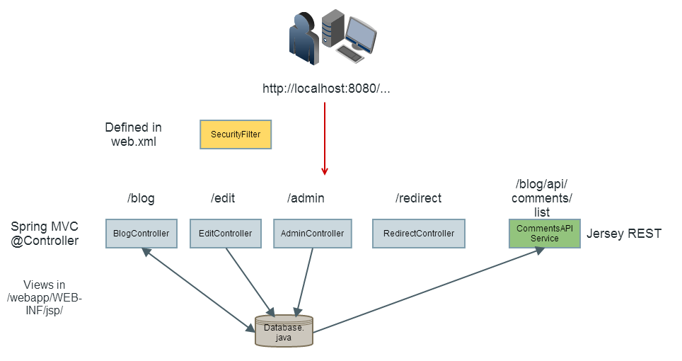

Application security workshop
Jon Are Rakvåg
@jonarer
Agenda
- Intro
- Cross site scripting (XSS)
- Cross site request forgery (CSRF)
- Broken security features
- Misconfiguration
- Assorted issues
- Cryptography
- Injection
- Summary
Intro
Goals
Hands-on appsec experience
Appsec != security features
Tools of the trade
- Firefox
- Burp Suite
- (Java, an IDE, mvn, git)
Resources
- OWASP Top 10
- OWASP Cheat Sheets
KWASHC
The website

Cross Site Scripting (XSS)
Fooling your app to include *my* malicious JS
Reflected XSS

Reflected XSS

Demo
So what?
The attacker can now:
- Change everything the user is shown
- Manipulate all requests to the server
- Forge new requests
- Send sensitive data to third party server
- Steal the session?
- Probably install malware on the client
Other forms of XSS
Stored XSS
User input stored on the server, then included as html
DOM based XSS (client side)
Scripts reading user data and then
writing html(.innerHtml, .outerHtml, .html(), document.write, createElement)
or executing (eval(), setInterval(), setTimeout(), new Function() or location.replace)
XSS mitigations
- Escape output
- Validate input
- Avoid user data in dangerous JS functions
- Write user data as text in JS (.text() etc)
- Protect session cookies (httpOnly)
- Set a Content Security Policy (CSP)
- Use a mature front end framework
Your turn
Cross Site Request Forgery (CSRF)
Fooling the browser's session handling
Demo
Predictable requests to a site can be forged
Fixing CSRF
Adding unpredictability
<form action="account.jsp">
<input type="hidden" name="csrf_token" value="FRUjQxPbyqmTtuXxip2tOWEqLFd">
Username: <input type="hidden" name="username" value="user">
Password: <input type="password" name="password">
...
</form>
Your turn
Missing or broken security features
Input validation
The first line of defense
Do not trust user input
Validate all the things!
Do
- Parse strings to proper objects or enums
- ...or whitelist characters
- Validate server side
Do not
- Blacklist characters (
', ", <, >...) - Blacklist whole strings (
SELECT, <script>...) - Only validate client side (JS, HTML5, thick client...)
Validation limitations
- We often don't know in what context the data will be used
- Functional limitations (Lisa O'Reilly? Henrik L'Abée-Lund? Passwords? Discussions of JavaScript?)
-> validate as strictly as you can given the functional constraints
Malicious code
(or misplaced dev/test features)
Unvalidated redirects
Abusing users' trust in your site
Demo
Your turn
Misconfiguration
Magic frameworks
...and insecure defaults
Broken security
through simple misconfiguration
Improper error handling
Technical error messages are interesting!
-> Detailed logs serveside, generic messages to the client
Your turn
Assorted issues
Click-jacking
Demo
Known vulnerable components
Demo
Real world known vulnerable components mitigation
- Automate, and plan for patching
- Java: OWASP Dependency Check or Nexus Pro
- JavaScript: retire.js
Your turn
Cryptography
is hard
Cryptography != obfuscation
Do
- Cheat! Use COTS, frameworks, established services, best practices and the like
- Expect the encryption to be broken at some point
- Hire some help. Seriously. Crypto is hard.
Do not
- Roll your own crypto!
- Use established crypto in new innovative ways